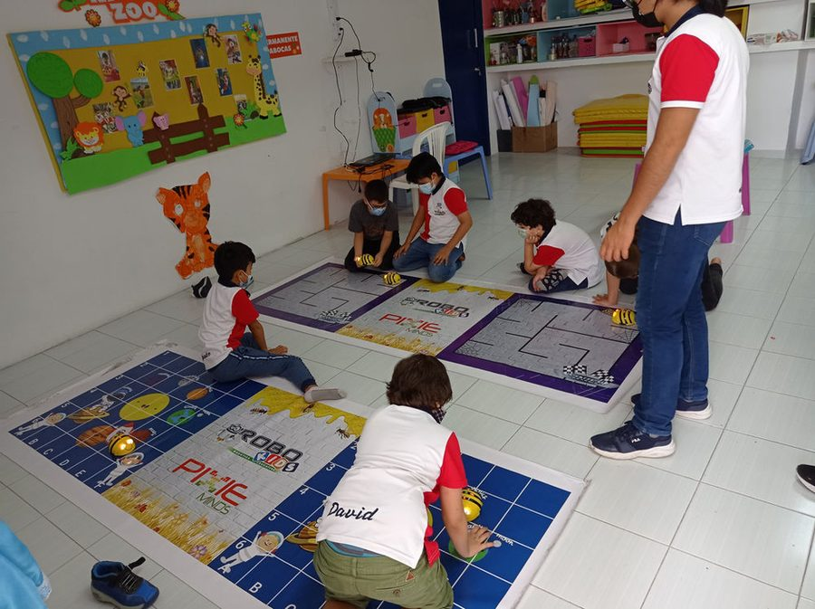

SD2025/0089253
MARCAMARCA – ROBOKIDS
LA INTEGRACIÓN DE LA ROBÓTICA EN LOS PROCESOS DE APRENDIZAJE PERMITE DESARROLLAR HABILIDADES TRANSVERSALES A LAS DIFERENTES ASIGNATURAS, PENSAMIENTO COMPUTACIONAL APLICADO A LA RESOLUCIÓN DE PROBLEMAS, CREATIVIDAD E INNOVACIÓN, TRABAJO EN EQUIPO, CAPACIDADES EXPRESIVAS Y COMUNICACIONALES, Y USO AUTÓNOMO Y CON SENTIDO CRÍTICO DE LAS TECNOLOGÍAS.
- Inventor
- Ricardo Madero – Robokids S.A.S
- Sector
- Software – Tecnologías
- Página Web
- Abrir enlace ↗
- Contacto
- 📞 3168713099📞 3042141817